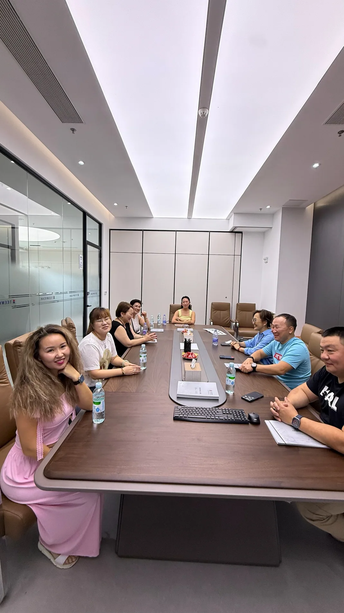
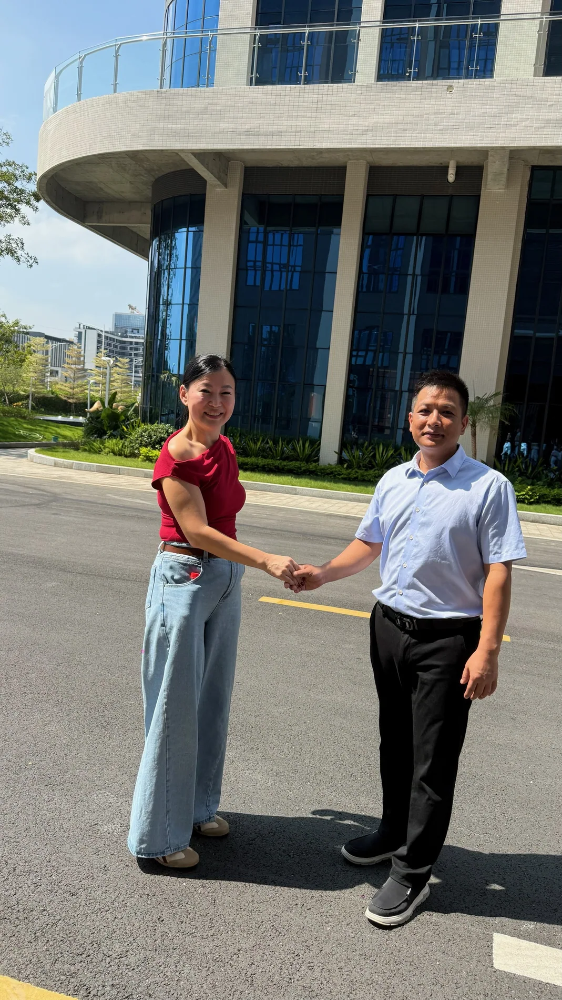
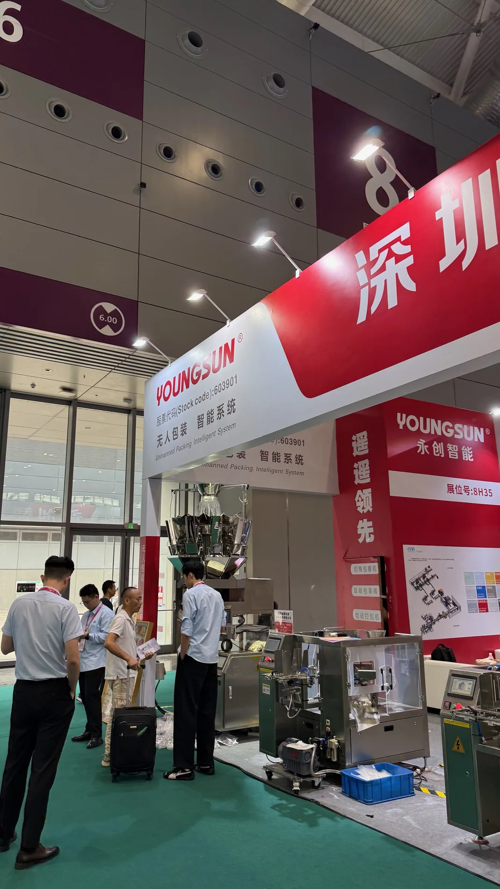
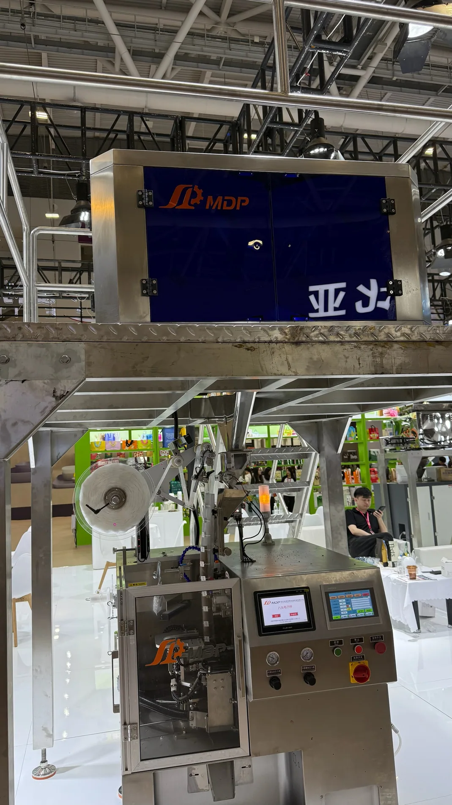

ВСТРЕЧА НА ПРОИЗВОДСТВЕ
Teemyeah — знакомство с командой завода
Во время поездки встретились с представителями Teemyeah и обсудили производственные решения. На фотографиях — совместный снимок и рабочее общение.



Это кадры из поездок команды DARKHANTECH: встречи на предприятиях, разговоры с представителями заводов и знакомство с оборудованием на выставке в Шэньчжэне. Здесь — фотографии поездок, встреч и оборудования, которое мы изучали на месте.
Посмотреть оборудование ↗
Личные встречи и знакомство с оборудованием на предприятиях Китая. На фотографиях — производственные площадки, оборудование и общение с представителями заводов.
Во время поездки встретились с представителями Teemyeah и обсудили производственные решения. На фотографиях — совместный снимок и рабочее общение.

Команда DARKHANTECH побывала на предприятии ASTAR, встретилась с представителями и познакомилась с оборудованием на площадке. Фотографии показывают сам визит, обсуждение вопросов и производственную среду.




На выставке в Шэньчжэне команда знакомилась с упаковочным оборудованием и стендами производителей. Это возможность увидеть разные машины и сравнить подходы к фасовке и упаковке. Конкретные модели и результаты переговоров добавим после уточнения.



В материалах производителя есть фотографии оборудования и видео машин в работе. Смотрите отдельный обзор, а подробные технические характеристики моделей появятся после получения подтверждённых данных.
Смотреть оборудование и видео Xuzhong ↗
Начнём с вашего продукта, объёмов и задач. Потом предложим варианты, о которых есть смысл говорить с заводом.
Вернуться на главную ↗Что производите, какой объём нужен и что хотите улучшить? Начнём с разговора о продукте и подберём вопросы к производителям.